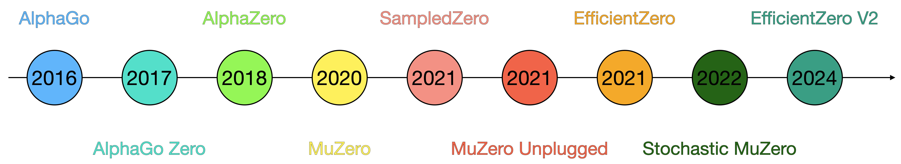
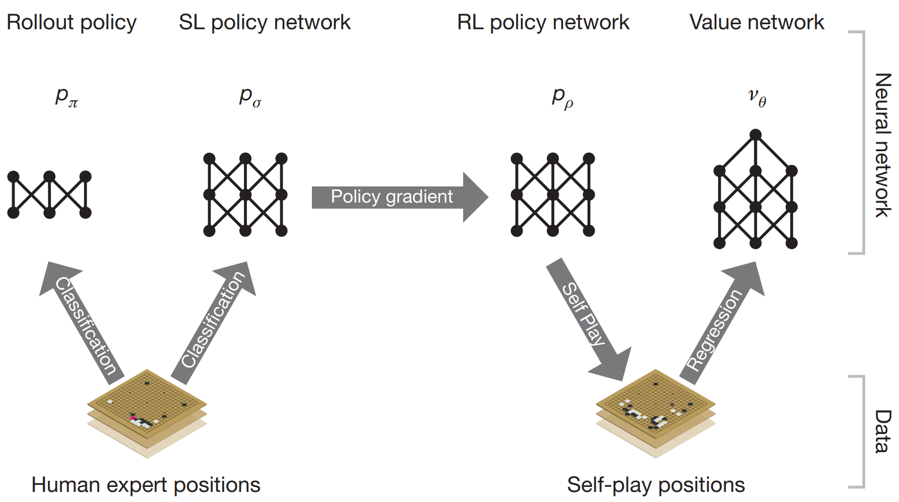
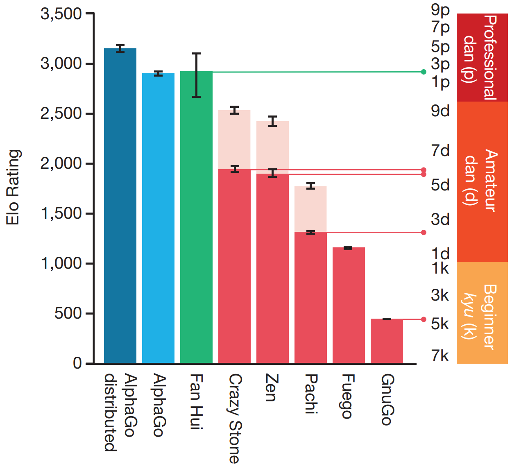
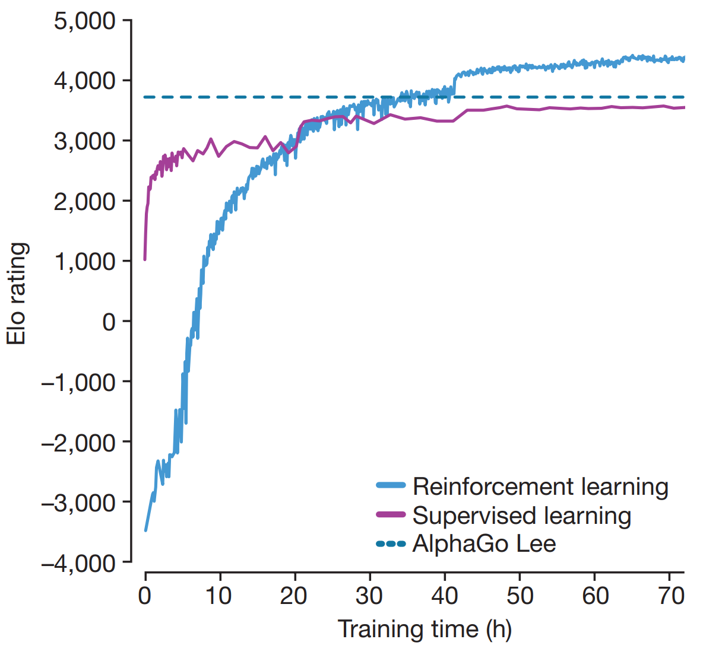
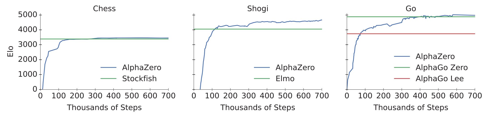
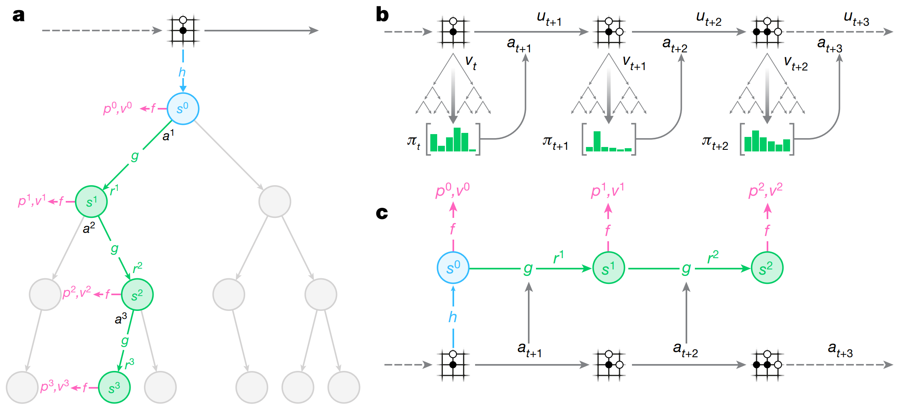
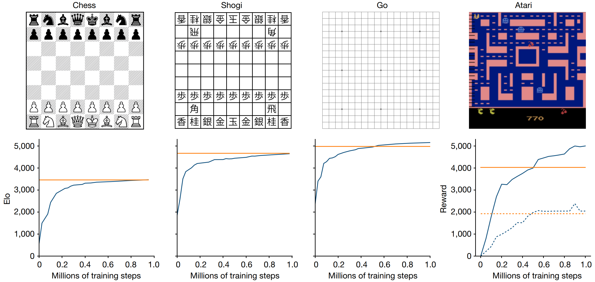
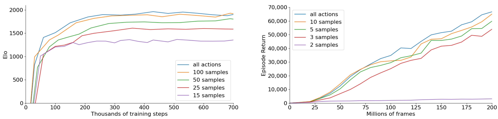
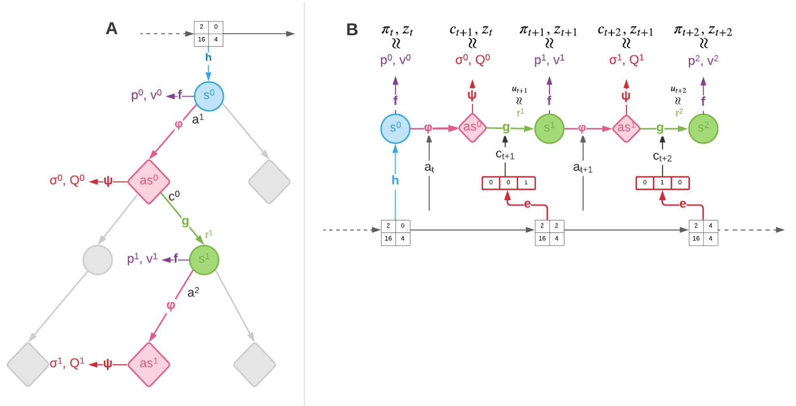
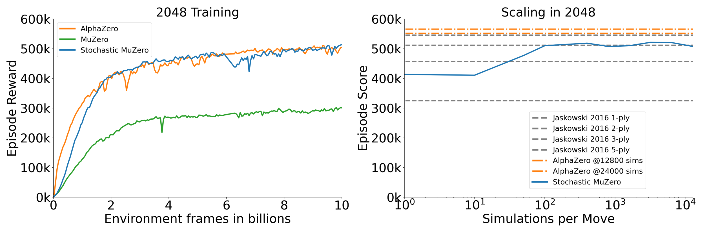

Zero to Reality: AlphaGo, MuZero and the Road to Real-World AI

Figure 1: Evolution of MuZero and its successors from 2016–2024.
From defeating world champions in Go to tackling more general applications, the journey from AlphaGo to MuZero and its variants is a fascinating one. This post offers a concise overview of how these methods evolved, what sets them apart, and the challenges they aim to solve. Along the way, we’ll look at AlphaGo Zero, AlphaZero, MuZero, and their successors — Sampled, Unplugged, Stochastic, and EfficientZero — that pushed AI from zero-sum board games into stochastic and uncertain “real-world” environments.
AlphaGo - 2016 [1]
Go has around \(250^{150}\) possible moves. Iterating over all possibilities to find an optimal policy is unfeasible. Instead, algorithms use some flavor of tree-search-based methods with additional handcrafted heuristics. Nevertheless, the issue of how to efficiently explore the tree remains. The innovation behind AlphaGo is to combine MCTS [1] with policy and value networks to obtain a very efficient tree search. But how is that achieved?
AlphaGo has a combination of policies and value networks that estimate the action distribution for a given state and the expected game outcome. Initially, a policy is trained in a supervised manner (with 30 million positions), \(p_\sigma(a|s)\), which tries to predict expert moves. A smaller policy, \(\pi_r(a|s)\), is also trained with the goal of providing much faster evaluations for rollout (2 \(\mu\text{s}\) against 3ms according to the authors). Then, a new policy \(\pi_p\) is initialized with the same weights as \(\pi_\sigma\), which is used for self-play with randomly selected previous versions of the policy. \(\pi_p\) ended up winning 80% of the games against \(\pi_\sigma\). The gradient used to train \(\pi_p\) follows:
\[ \Delta p \propto \frac{\partial \pi_p(a|s)}{\partial p}z \]
With the policies networks trained, the value network, \(v_\theta(s)\), was obtained by predicting the outcome of the games, \(z\), played by \(\pi_p\). To prevent overfitting, 30M positions were sampled from different games played with self-play. The gradient used was:
\[ \Delta \theta \propto \frac{\partial v_\theta(s)}{\partial \theta}(z-v_\theta(s)) \]

Figure 2. AlphaGo training pipeline. Figure 1.a from [1].
Then, the trained policies were combined with MCTS. Starting from the root node, each simulation will select actions based on
\[ \begin{split} a_t &= \text{argmax}_a(Q(s_t,a) + u(s_t,a)) \\ u(s,a) & \propto \frac{P(s,a)}{1+N(s,a)} \end{split} \]
where \(P(s,a)=p_\sigma(a|s)\). (instead of \(\pi_p\)). When a leaf node is reached, \(s_L\), the value network is called to provide an estimate of the outcome and the faster \(\pi_r\) is used to perform a rollout with outcome \(z_L\). The value of the state is then obtained by combining both based on a parameter \(\lambda\):
\[ V(s_L) = (1-\lambda)v_\theta(S_l)+\lambda z_L \]
After reaching the leaf state, the action value estimation and the visit count are updated with:
\[ \begin{split} N(s,a) & = \sum_{i=1}^n 1(s,a,i) \\ Q(s,a) & = \frac{1}{N(s,a)}\sum_{i=1}^n 1(s,a,i)V(s_L^i) \end{split} \]
The action with the highest count in the root node is used in the game.
Go’s invariance under reflection and rotation was explored during the networks’ training and MCTS. For example, the value of a given state is computed from the average of that state after undergoing all eight possible positions. During MCTS, one of the eight possibilities for a given state was sampled and used with \(v_\theta\) and \(\pi_\sigma\) in the leaf node.
The network architecture for the policy function contains an input layer (\(19\times 19\times 48\)) followed by 12 hidden layers, which pad the previous hidden layer output into a \(21\times 21\) image with 192 filters and apply a ReLU. Then, a softmax function is applied to one last convolutional layer, outputting the action probabilities. The value network is similar, with an additional hidden layer, and two last fully-connected layers, the first with 256 with ReLU units and the second a linear layer with a tanh function that outputs the value for the given state.
AlphaGo was tested against other Go programs, winning 99.8% of the matches. More interestingly, a distributed version of AlphaGo (which used more computing power) competed with Fan Hui, winning 5-0! After defeating Fan, the next challenge was going against Lee Sedol. To do so, an “intermediate” version between AlphaGo and AlphaGo Zero was created, referred to as AlphaGo Lee. AlphaGo Lee’s value function was obtained from AlphaGo self-play in an iterative process. Larger value and policy networks were also used, with 12 convolutional layers of 256 planes. During the game, many plays were remarkable (move 37, for example); a full documentary of AlphaGo, including the match with Lee is available on YouTube.

Figure 3. AlphaGo performance against other algorithms. Figure 4.a from [1].
A notable comparison made by the authors was studying AlphaGo’s performance when setting \(\lambda=0\) (only uses \(v_\theta\) on leaf nodes) or \(\lambda=1\) (only uses rollout with \(\pi_r\)). The best result was obtained by setting \(\lambda=0.5\). This brings one of the questions addressed by its more powerful version, AlphaGo Zero: Can we remove rollouts?
AlphaGo Zero - 2017 [3]
Given AlphaGo’s performance, the next question was: could an even more general algorithm learn entirely through self-play? AlphaGo Zero eliminates the initial supervised learning on expert data, learning from scratch (starting tabula rasa, as described by the authors) and without handcrafted features. The main changes compared to AlphaGo (and AlphaGo Lee) are:
- No experience generated by experts to initialize training;
- No handcrafted extra features as input, only the position of the pieces;
- Single network that predicts both the value function and policy, \((\mathbf{p}, v)=f_\theta\);
- No rollouts in the tree search, using only the value function returned by \(f_\theta\);
Still, AlphaGo Zero has perfect knowledge of the game rules, which prevents illegal moves in the MCTS. Go’s invariance is also explored to improve the tree search.
The \(f_\theta\) network contains 20 residual blocks, each containing convolution layers, batch normalization, ReLU activations, and skipped connections. The output is connected to two heads, with the policy head having a convolution and fully-connected layers, and the value head having a convolution and two fully-connected layers. The loss function is:
\[ l=(z-v)^2-\pi\text{log}\mathbf{p}+c||\theta||^2 \]
where \(c||\theta||^2\) is a regularization term.
Surprisingly, even without expert data, it surpassed AlphaGo Lee after 36 hours of training (which was trained for weeks). After 72 hours, it won all 100 games against AlphaGo Lee using a fraction of the compute cost (4 TPUs vs 48 TPUs).

Figure 4. AlphaGo Zero performance comparison. Figure 3.a from [3].
AlphaZero - 2018 [4]
AlphaZero steps towards of a more general algorithm by being capable of playing not only Go but also Chess and Shogi. As indicated by the authors, the main differences with respect to the previous algorithms are: - Does not exploit the symmetry in Go to augment training data or during the tree search; - Uses the latest policy for self-play instead of the previous best.
The same network architecture and hyperparameters from AlphaGo Zero are used. Although being more general, AlphaZero achieved a similar performance to AlphaGo Zero. Interestingly, it surpassed Stockfish (2016 TCEC world champion program) after 4 hours of training in Chess and Elmo (2017 CSA world champion program) after 2 hours in Shogi.

Figure 5. AlphaZero performance in Chess, Shogi, and Go. Figure 1 from [4].
MuZero - 2020 [5]
Despite the advances presented in AlphaZero, which requires no supervised training or handcrafted encodings, a simulator is still needed to perform the MCTS. When selecting an action \(a\), the simulator is called to return the next state, \(s'\). MuZero came to change this requirement by having an internal model of the environment, which it also learns during training. This brings the interesting question: what matters for learning in the environment? Should the model focus on specific features or represent the original environment as closely as possible?
To address that, MuZero plans on latent spaces instead of the history of observations. To do so, it has two new functions, the representation function \(s^0=h_\theta(0_1, \cdots,o_t)\), and the dynamics function \(r, s' = f_\theta(s, a)\). Both are represented by DNNs.
The representation function maps the observation to the state. Still, there is no requirement on how well you can reverse the operation and reconstruct the original observation from the latent state. This means that only the most critical features for learning are extracted. Notably, once the root node state is obtained using \(h_\theta\), all the tree search is conducted in the latent state. The internal model of the world is obtained by the dynamics function, which outputs an estimated reward \(r\) and next state \(s\) from the current state and action, such that \(r, s' = f_\theta(s, a)\). Therefore, MuZero has a total of three functions:
- Representation function: \(s^0 = h_θ(o^0)\) — encodes the observation history into a compact latent state.
- Dynamics function: \((s', r) = g_θ(s, a)\) — predicts the next latent state and immediate reward given a state and action.
- Prediction function: \((p^k, V) = f_θ(s^k)\) - produces a policy distribution and scalar value from a latent state.
The total loss function used is
\[ l_\text{MuZero} = \sum_{k=0}^Kl_P(\pi_{t+k}, p_t^k) + \sum_{k=0}^K l^v(z_{t+k}, v_t^k) + \sum_{k=1}^K l^r(u_{t+k}, r_t^k) + c||\theta||^2 \]
where \(\pi\) is the action distribution at the root node returned from the MCTS, \(z\) is the game’s output (win, lose, or draw for zero-sum games), and \(u\) the reward at each step. Note that neither the state returned by the representation nor the encoder appears explicitly in the loss.

Figure X. Illustration of MuZero tree search (a), interaction with the environment (b), and training with unrolled experience (c). Figure 1 from [5].
The results obtained by MuZero are similar to those from AlphaZero in Chess and Shogi, and slightly better in Go. The impressive part of the results is that the algorithm is capable of such high performance without having a simulator available for the tree search, using its learned model instead.
An interesting aspect of having the dynamics function returning \(r\) is that MuZero can be applied to environments with intermediate rewards, not only at the end. This significantly extends MuZero’s applicability, moving from only zero-sum games (such as Chess, Go, and Shogi) to more general environments, such as Atari Games! The authors report that MuZero achieved SOTA in 57 games.

Figure 6. MuZero performance in Chess, Shogi, Go, and Atari. Comparison against AlphaZero in zero-sum games and R2D2 in Atari. Figure 2 from [5].
Despite high performance, one caveat is the high computation cost for training. Board games used 16 third-generation TPUs for training and 1,000 for self-play, while 8 TPUs were used for training and 32 for self-play in the Atari case. The authors addressed this limitation by introducing the Reanalyze technique, which improves the algorithm’s sample efficiency. Reanalyze works by re-running MCTS on older data to obtain new target policies and values for the loss function.
In short, MuZero advanced by not requiring a simulator while preserving performance and being applicable not only to zero-sum games. Still, some limitations remained since it only considers deterministic environments, is computationally expensive, and still doesn’t achieve zero-shot generalization as noted by the authors. As an application, a MuZero variant was used for YouTube video compression.
Sampled MuZero - 2021 [6]
MuZero achieved SOTA without a simulator but was limited to discrete-action settings. Sampled MuZero provides an important generalization, being applied to cases with large action spaces and continuous actions. Interestingly, this extension is achieved with minimal changes. More specifically, at each tree node, \(K\) actions are sampled from a distribution \(\beta\) during expansion, and search is conducted among those sampled actions. The equation used to select actions within the tree is
\[ a = \text{argmax}_a\left(Q(s,a) + c(s)\sigma\frac{\sqrt{\sum_b N(s,b)}}{1+N(s,a)}\right) \]
where \(\sigma=\pi(s,a)\) in MuZero. Sampled MuZero uses \(\sigma=\frac{\hat{\beta}}{\beta}\pi\) with \(\hat{\beta}(a|s)=\frac{1}{K}\sum_i \delta (a-a_i)\). At the node, actions are sampled from \(\beta=\pi^{1\tau}\) where \(\tau\) is a temperature parameter.
Sampled MuZero was tested in Go when varying \(K={15, 25, 50, 100}\), with the case \(K=100\) achieving a similar performance to MuZero (which can sample all 362 available actions). A similar result was obtained when testing it with Ms. Pacman, where good results were obtained with \(K=3\) (\(|\mathcal{A}|=18\)).

Figure 7. Sampled MuZero performance in Go (left) and Ms. Pacman (right) against MuZero (all actions) with different \(K\). Figure 2 from [6].
Results were also presented for the case with a continuous action space in MuJoCo-based tasks. The algorithm networks were modified, replacing the convolutional layers with fully-connected layers, and Gaussian distributions represented the continuous actions. Interestingly, the case where the raw pixels were provided instead of the states was also tested.
MuZero Unplugged - 2021 [7]
MuZero Unplugged improved the Reanalyze technique introduced in MuZero, demonstrating that learning is possible without interacting with the environment (offline RL).
Reanalyze uses already generated trajectories to update the networks. A given sampled state \(s_t\) has as associated action \(a_t\) that was played, a reward \(u_t\), the next state \(s_{t+1}\), and the state value \(z_t\). MuZero’s MCTS can be applied to \(s_t\), resulting in a \(\pi_{\text{MCTS}}\) being returned, the estimate of the value \(v_t\), and the immediate reward \(r_t\). Then, the same loss used for MuZero can be used to approximate those results. The main difference is that the action returned by the tree search is not used in the environment, as the trajectory was already generated.
The fraction of Reanalyze compared to environment interactions was named the Reanalyze fraction. Some uses of the Reanalyze technique are:
- Increase efficiency by reanalyzing data sampled from the previous \(N\) games (a prioritized replay buffer can be used instead, exploiting “good episodes”);
- Offline RL;
- Bootstrap from demonstrations;
No changes are made to MuZero other than the training pipeline. Interestingly, no off-policy corrections were made to the algorithms. Tested in Atari games, MuZero outperformed the DQN, IQN, and BCQ baselines. The authors also demonstrate offline RL with continuous action spaces using Sampled MuZero. The original action selected in the data from Reanalyze is added to the root node as one of the options to be explored, preventing cases where the algorithm would not sample the actions that were played. MuZero Unplugged’s performance is compared to several baselines - D4PG, BRAC, RABM, and behavioral cloning with MuZero - and achieved the best performance in most cases. MuZero Unplugged highlights how one single algorithm can achieve SOTA with both offline and online RL with continuous and discrete actions.
Stochastic MuZero - 2022 [8]
One of the main limitations remaining in MuZero is its applicability only to deterministic environments. To address this issue, the concept of afterstates is used, which can be understood as an intermediate state \(as_t\) after applying action \(a\) at state \(s_t\) and before the state stochastically transitioning to other states with probability \(T(s_{t+1}|as_t)=T(s_{t+1}|a,s_t)\). In doing so, Stochastic MuZero has five functions instead of the tree in regular MuZero:
- Representation function: \(s^0 = h_θ(o^0)\);
- Dynamics function: \((s', r) = g_θ(as, c)\) — predicts the next latent state and immediate reward given an afterstate state and chance;
- Prediction function: \((p^k, V) = f_θ(s^k)\);
- Afterstate dynamics function: \(as_t=\phi(s_t,a)\) - outputs the afterstate given a state and action;
- Afterstate prediction function: \((\sigma_t, Q_t)=\psi(as_t)\) - outputs a distribution for the chance outcomes \(c\).
The loss function is similar to the one used for MuZero with additional terms for the chance and \(Q\) predictions:
\[ l_{\text{SMuZero}} = l_{\text{MuZero}} + sum_{k=0}^{K-1} l^Q(z,Q) + \sum_{k=0}^{K-1}(c,\sigma) + \beta \sum_{k=0}^{K-1}||c-c^e ||^2 \]
where \(c^e\) is the output of the variational autoencoder that is used for the chance prediction.
The MCTS is also modified to account for chance and decision nodes. Decision nodes were already present in previous versions, where the agent selects an action. Chance nodes are intermediate nodes between decision nodes (Figure 8).

Figure 8. Stochastic MuZero MCTS (left) and training (right). Figure 1 from [8].
The algorithm’s performance is tested in the 2048 and Backgammon games. Interestingly, Stochastic MuZero’s performance matches AlphaZero’s (which uses a simulator for the tree search). It is also noteworthy that its performance matches standard MuZero in Go with additional generalization.

Figure 9. Stochastic MuZero against regular MuZero, AlphaZero with perfect information, and Jaskowski algorithm. Figure 2 from [8].
EfficientZero - 2021 / 2024 [9]
EfficientZero aims to make MuZero more sample-efficient by addressing three points that hurt sample efficiency.
In MuZero Reanalyze, \(z\) is computed using a trajectory already played and not representative of the current algorithm. To mitigate this issue, the authors suggest applying the MCTS to the last state of the Reanalyze unrolling to obtain a better estimate of that value. In practice, \(z_t=\sum_i^{l-1}\gamma^i u_{t+i} + \gamma^l v_{t+l}^{\text{MCTS}}\) instead of \(z_t=\sum_i^{k-1}\gamma^i u_{t+i} + \gamma^k v_{t+k}\) where \(v^{\text{MCTS}}\) is returned by the new tree search and \(l\) can change depending on how old the data is.
MuZero doesn’t explicitly account for the prediction of the next state \(s'\) in the loss, which can lead to mismatches. The authors add an extra loss term to help match the predicted state $_{t+1} (obtained by applying action \(a\) at state \(s_t\), which is obtained from the history \(o_t\)) to \(s_{t+1}\) (obtained directly from history \(o_{t+1}\)).
The estimation of the action values, \(Q(s_t,a)\) can suffer from compounding errors. Instead of using the predicted rewards, \(r_t\), such that \(Q(s_t,a)=\sum_{i=0}^{k-1}\gamma^i r_{t+i} + \gamma^k v_{t+k}\), a value prefix \(G=m(s_t, \hat{s}_{t+1}, \cdots, \hat{s}_{t+k-1})\), returned by a trained LSTM \(m\), such that \(Q(s_t,a)=G + \gamma^k v_{t+k}\).
Among their results, the authors demonstrate that EfficientZero achieves super-human performance in the Atari 100k benchmark with only 2 hours of real-time gameplay, also surpassing other baseline algorithms.
A newer version, EfficientZero V2 [10], applies extra modifications to its predecessor and accommodates continuous domains. The method also achieved SOTA with 2 hours of real-time gameplay. The authors made the code available on GitHub for the first and second versions.
References:
[1] M. J. Kochenderfer, T. A. Wheeler, and K. H. Wray, Algorithms for decision making. Cambridge, Massachusetts: The MIT Press, 2022.
[2] D. Silver et al., “Mastering the game of Go with deep neural networks and tree search,” Nature, vol. 529, no. 7587, pp. 484–489, Jan. 2016, doi: 10.1038/nature16961.
[3] D. Silver et al., “Mastering the game of Go without human knowledge,” Nature, vol. 550, no. 7676, pp. 354–359, Oct. 2017, doi: 10.1038/nature24270.
[4] D. Silver et al., “A general reinforcement learning algorithm that masters chess, shogi, and Go through self-play,” Science, vol. 362, no. 6419, pp. 1140–1144, 2018, doi: 10.1126/science.aar6404.
[5] J. Schrittwieser et al., “Mastering Atari, Go, chess and shogi by planning with a learned model,” Nature, vol. 588, no. 7839, pp. 604–609, Dec. 2020, doi: 10.1038/s41586-020-03051-4.
[6] T. Hubert, J. Schrittwieser, I. Antonoglou, M. Barekatain, S. Schmitt, and D. Silver, “Learning and Planning in Complex Action Spaces,” in Proceedings of the 38th International Conference on Machine Learning, M. Meila and T. Zhang, Eds., in Proceedings of Machine Learning Research, vol. 139. PMLR, July 2021, pp. 4476–4486. [Online]. Available: https://proceedings.mlr.press/v139/hubert21a.html
[7] J. Schrittwieser, T. Hubert, A. Mandhane, M. Barekatain, I. Antonoglou, and D. Silver, “Online and offline reinforcement learning by planning with a learned model,” in Proceedings of the 35th International Conference on Neural Information Processing Systems, in NIPS ’21. Red Hook, NY, USA: Curran Associates Inc., 2021.
[8] I. Antonoglou, J. Schrittwieser, S. Ozair, T. K. Hubert, and D. Silver, “Planning in Stochastic Environments with a Learned Model,” in International Conference on Learning Representations, 2022. [Online]. Available: https://openreview.net/forum?id=X6D9bAHhBQ1
[9] W. Ye, S. Liu, T. Kurutach, P. Abbeel, and Y. Gao, “Mastering Atari Games with Limited Data,” in Advances in Neural Information Processing Systems, M. Ranzato, A. Beygelzimer, Y. Dauphin, P. S. Liang, and J. W. Vaughan, Eds., Curran Associates, Inc., 2021, pp. 25476–25488. [Online]. Available: https://proceedings.neurips.cc/paper_files/paper/2021/file/d5eca8dc3820cad9fe56a3bafda65ca1-Paper.pdf
[10] S. Wang, S. Liu, W. Ye, J. You, and Y. Gao, “EfficientZero V2: mastering discrete and continuous control with limited data,” in Proceedings of the 41st International Conference on Machine Learning, in ICML’24. Vienna, Austria: JMLR.org, 2024.